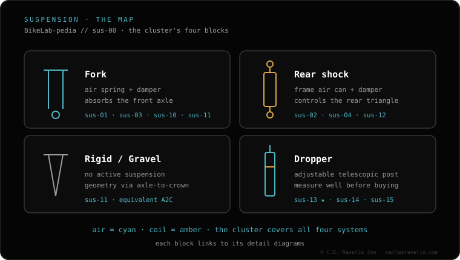

Home › BikeLab-pedia › Suspension & dropper
Cluster 07 · Suspension & dropper
Suspension & dropper
Is your suspension harsh , bottoming out or losing air ? Not sure which fork, shock or dropper fits? Here is the setup, the problems and the compatibility, sorted.

Suspension & dropper Suspension sag Start here. How much it sinks under your weight: 15-20% fork, 25-30% shock. The base of every setting. Setup · tuning
Fork air pressure by weight Starting PSI by weight and how to dial it to sag. How many volume spacers Stop bottoming without killing small-bump feel. Setting rebound Neither pogo nor packed-down: return speed, dialed. High & low-speed compression Shaft speed, not bike speed. What each one does. Baseline setup The starting point, in order: pressure, sag, rebound, compression. When to use lockout Climbs and tarmac yes; descents no. When to lock without damage. Troubleshooting
Fork feels harsh Skipping small bumps: what to adjust, in order, before a service. Bottoming out Without overdoing pressure: pressure, token and compression. Fork losing air Often the valve, not the seals. What to check first. Fork stuck down (won't recover) Rebound, negative air or dry seals: what to check, in order. Rear shock losing air Find the leak: valve, air can or service. What to check. Suspension noise diagnosis Squelch, clunk or suck-down: each noise points to a cause. Air vs coil
Air vs coil Light and tunable or supple and supportive. Which suits you. Progression curve Air progressive, coil linear and how tokens curve the end. Coil spring rate The right spring rate for your weight and frame, no guessing. Glossary
What is sag How much it sinks under your weight: the base of every setting. What is rebound How fast it extends back. Fast vs slow. What is compression The resistance to sinking. What HSC and LSC are for. What is a damper The oil cartridge that controls rebound and compression. Stanchions The sliding tubes: what they are and why a scratch leaks. Positive & negative chambers One holds your weight, one gives feel. How they equalise. Travel explained How much you need by discipline: XC, trail, enduro, DH. Offset & rake What they are and how they change trail and steering. Compatibility
What fork fits my bike The 5 measurements that must match before you buy. Fork offset 44 vs 51 How it changes steering and which suits you. Shock sizing Eye-to-eye and stroke: how to get the size right. Metric vs trunnion Two different mounts: which your frame takes. How much travel can I run How far you can bump travel without wrecking frame or geometry. Boost 15x110 axle What Boost is and whether your wheel and fork are compatible. Maintenance
Service intervals 50h/100h RockShox, 125h Fox. Don't skip the lower-leg one. Lower-leg service The cheap 50h service that extends the life of everything. Air can service Restore shock sensitivity without opening the damper. Damper service The oil cartridge: when it's due and why it's not DIY. Fork oil weight chart Weight vs cSt and why you don't mix bath and damper oil. Buying
RockShox vs Fox Equivalent tiers and cartridges, no marketing. Gravel
Is gravel suspension worth it? Fork, post or stem damping: when it helps and when it's overkill. Rigid forks
Rigid vs suspension Light and maintenance-free or control on the rough. Switching to rigid Match the axle-to-crown or you change the geometry. Dropper post
What is a dropper post Drop the saddle on the fly: why and how it works. What dropper fits my bike Diameter, travel and insertion: the 3 deciders. Diameter 30.9/31.6/34.9 How to find yours and why you shim up, not down. Measure insertion & stack The travel that really fits, not the box number. How much dropper travel The max that fits your frame and height. Dropper won't return 80% is one bolt, not the cartridge. The 1-minute check. Dropper sags when seated What fails and why it is often just a cartridge swap. Cable vs hydraulic vs AXS The 3 actuation systems: feel, maintenance and price. Internal vs external routing Where the cable runs and which dropper suits your frame. How to install a dropper Step by step: cut, route and bleed without the headache. Dropper service Why it loses feel or sags and the service that prevents it. BikeLab-pedia · Suspension & dropper cluster / Bicycle compatibility and standards / Carlos Eduardo Ravello Joo · BikeLab Studio · Trujillo, Peru